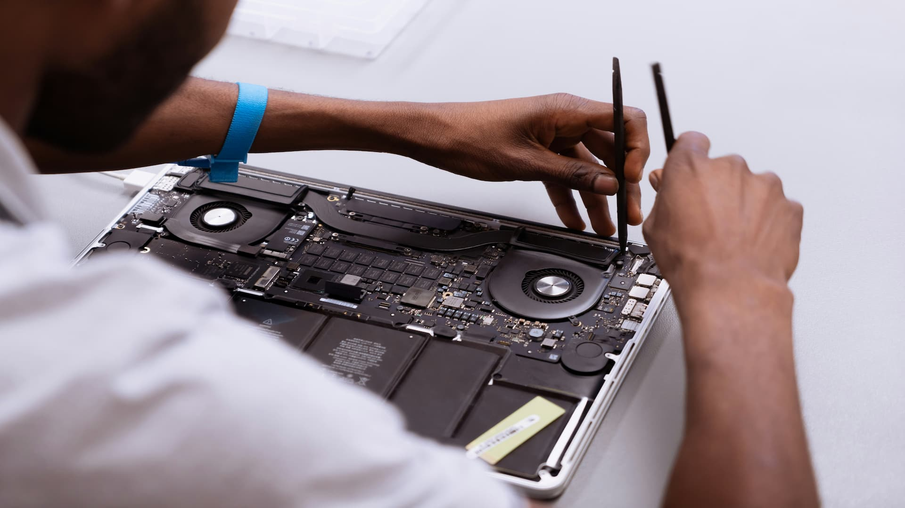

Our Services
MashTech Repairs provides technology repair and troubleshooting services for a range of everyday devices. Our services are designed to provide customers with convenient and affordable repair solutions.

Smartphone Repairs
We provide assistance with common smartphone problems, including device troubleshooting, software issues and general repair requirements.
- Device diagnostics
- Software troubleshooting
- General smartphone repairs
- Performance-related problems
Laptop Repairs
Our laptop repair service helps customers identify and resolve common hardware and software problems affecting their devices.
- Laptop diagnostics
- Software troubleshooting
- Performance problems
- General laptop repairs
Tablet Repairs
We assist customers with common tablet problems and provide troubleshooting and repair services.
- Tablet diagnostics
- Software troubleshooting
- Performance issues
- General tablet repairs
Need a Repair?
Tell us about your device and the problem you are experiencing. Our enquiry form allows you to provide the information needed to assess your repair request.
Make an Enquiry